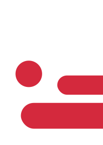
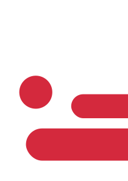

Przygotowania
Przygotowanie w szkole
Przed wyjazdem do Faro odbywały się spotkania organizacyjno-merytoryczne prowadzone przez koordynatora projektu pana mgr inż. Zbigniewa Niedbałę oraz przygotowanie kulturowo – pedagogiczne. Poznaliśmy zasady uczestnictwa w programie Erasmus+, wypełnialiśmy odpowiednią dokumentacje. Zapoznaliśmy się z miastem, regionem i kraju pobytu opracowując informacje na temat obyczajów, tradycji, systemu edukacji, historii, itd. Przed wyjazdem do Portugalii przedstawialiśmy prezentacje. Przygotowaliśmy własne Europass CV. Mieliśmy zdalne konsultacje z koordynatorem praktyk w Portugalii, co pozwoliło lepiej dobrać miejsca praktyk do naszych umiejętności, zainteresowań i potrzeb. Odbyliśmy przeszkolenie BHP przygotowujące do pracy w portugalskich firmach. Dla wyjeżdzających na staż uczniów został zorganizowany kurs języka angielskiego, który prowadził nauczyciel j. angielskiego pan mgr Grzegorz Wójcik. Kurs obejmował 30 godzin praktycznego zastosowania języka w różnych sytuacjach. W czasie lekcji uczyliśmy się, jak radzić sobie w codziennym życiu. Przykładowo: omawialiśmy słownictwo związane z naszymi dziedzinami (informatyka, elektronika), uczyliśmy się jak radzić sobie na lotnisku, w sklepie itp.
Lekcje portugalskiego
Podczas stażu w Portugalii dodatkowo mieliśmy 10-godzinny kurs języka portugalskiego prowadzony po przez native trenera pana Olavo Santos po zajęciach na praktykach. Na kursie uczyliśmy się podstawowych zwrotów w języku portugalskim używanych w życiu codziennym oraz w pracy zawodowej.
Wycieczki i aktywności
W czasie wolnym po praktykach oraz w weekendy poznawaliśmy miasto pobytu – Faro, kulturę i zwyczaje Portugalczyków, zwiedzaliśmy ciekawe miejsca regionu Algarve. Mieliśmy okazję poznać rówieśników odbywających praktykę w ramach programu Erasmus+ np. z Wysp Kanaryjskich czy z Polski. Poznaliśmy wielu Portugalczyków i osób z innych krajów w miejscach praktyk, w życiu codziennym, podczas zwiedzania czy uprawiania sportu dzieląc się z nimi swoimi zainteresowaniami i ćwicząc biegłość w porozumiewaniu się językiem angielskim.